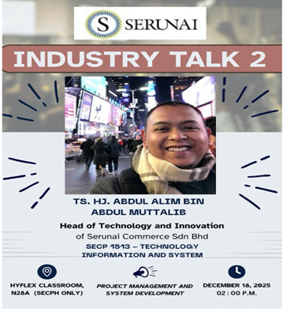

Industrial Talk 2 by SERUNAI
Project Management & System Development
Reflection on SERUNAI Industrial Talk: Project Management & System Development
On 18th December 2025, Serunai Commerce held an Industrial Talk at N28a, Faculty of Computing, about Project Management & System Development. This talk was attended by Ts. Hj. Abdul Alim from Serunai Commerce Sdn Bhd.
This talk was by far the most enlightening experience, which shifted my view on the Computer Science field. We learned that this field is not about mere coding but beyond that, things like the System Development Life Cycle (SDLC) to manage the complex projects heavily required on the structed framework to ensure the projects are user-friendly to the people. His final touch of this talk was to become a successful and stand-out graduate. We need to combine technical proficiency with strong project management skills.
The talk was very effective for the students and informative to help them grow in this computer science course.
We also did a Academic Writing for this Industrial Talk. Click Here for the Academic Writing.
Industrial Talk 2
Date : 18th December 2025
Day : Thursday
Talk Title: Project Management & System Development by SERUNAI.
Speaker: Ts. Hj. Abdul Alim Bin Abdul Muttalib (Head of Technology and Innovation, Serunai Commerce Sdn Bhd)